DSH / NEXTLoop 皮肤 — 截图基线（1440×900 Playwright 截图，除非注明）
BEFORE · 桌面 dark home（原版 bb 外观）
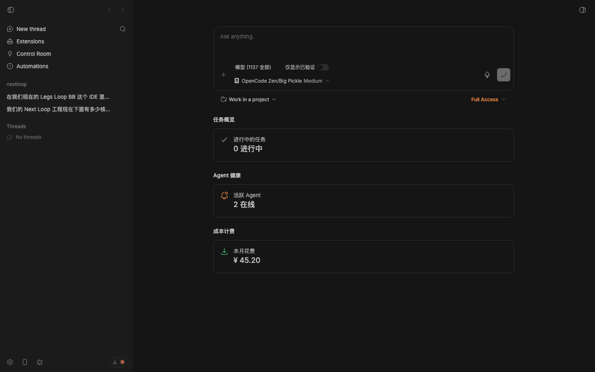
BEFORE · 桌面 light home（原版 bb 外观）
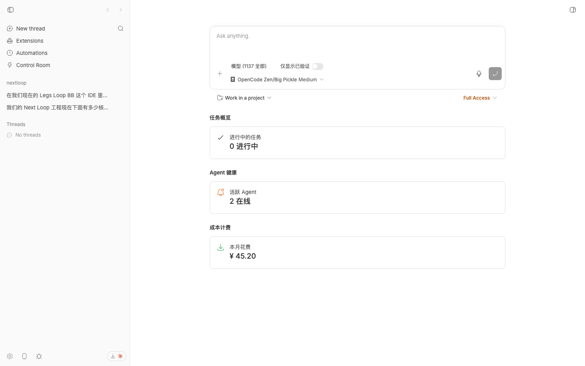
AFTER · 桌面 dark home（蓝黑画布 + 霓虹青 + 玻璃侧栏 + 应用坞磁贴）
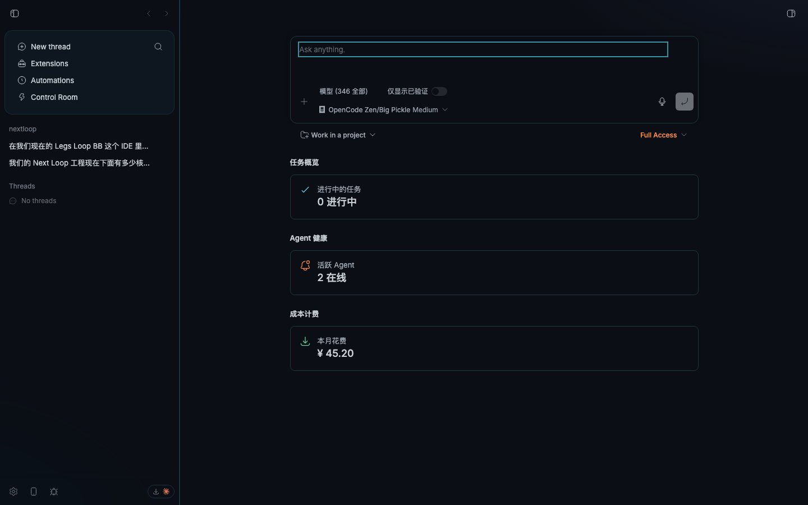
AFTER · dock 磁贴 hover 光效
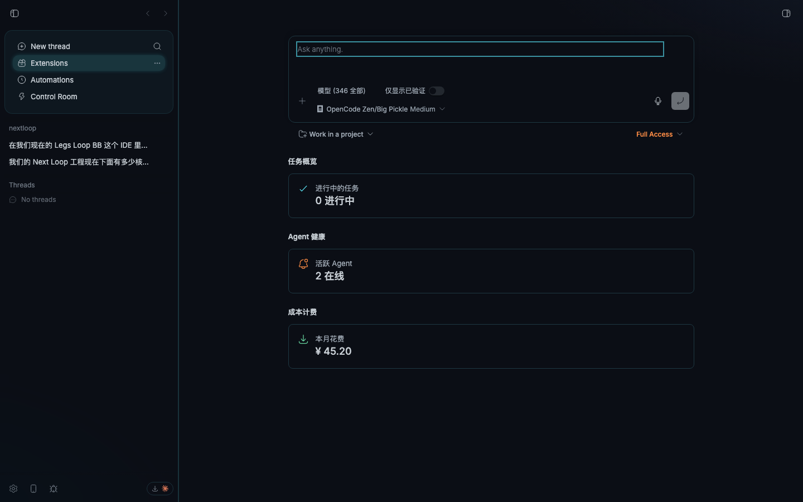
AFTER · 桌面 dark thread（对话/线程视图，皮肤覆盖）
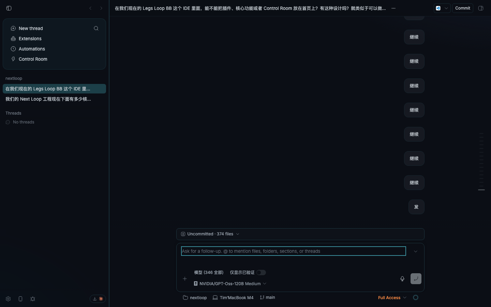
AFTER · 桌面 light home（清爽同源变体）
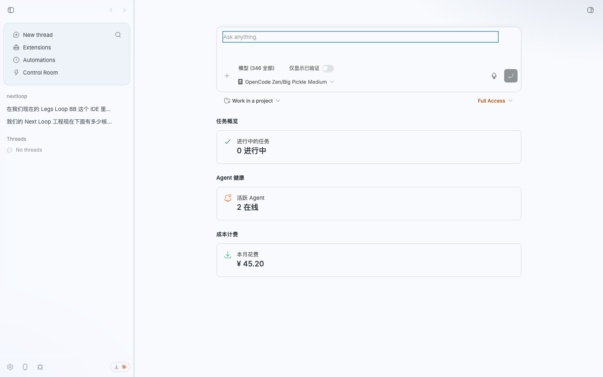
AFTER · 紧凑视口 dark（699px，移动/预览窗形态：无 rail 折叠钮）
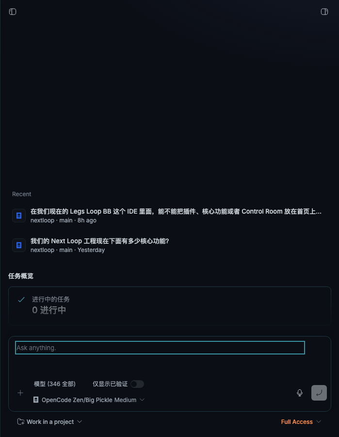
icon 抽屉 · 完整侧栏（顶部 rail 折叠钮在顶行下方）
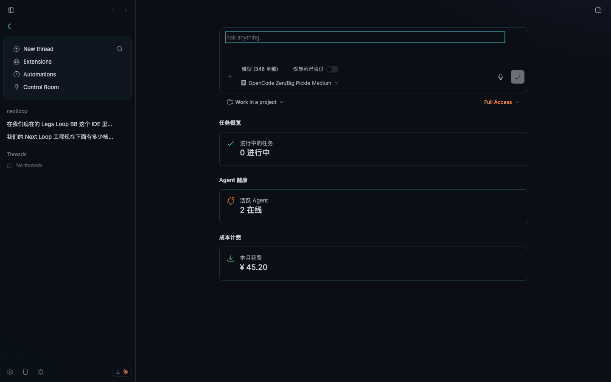
icon 抽屉 · 收起为图标磁贴 rail（悬停自动浮出）
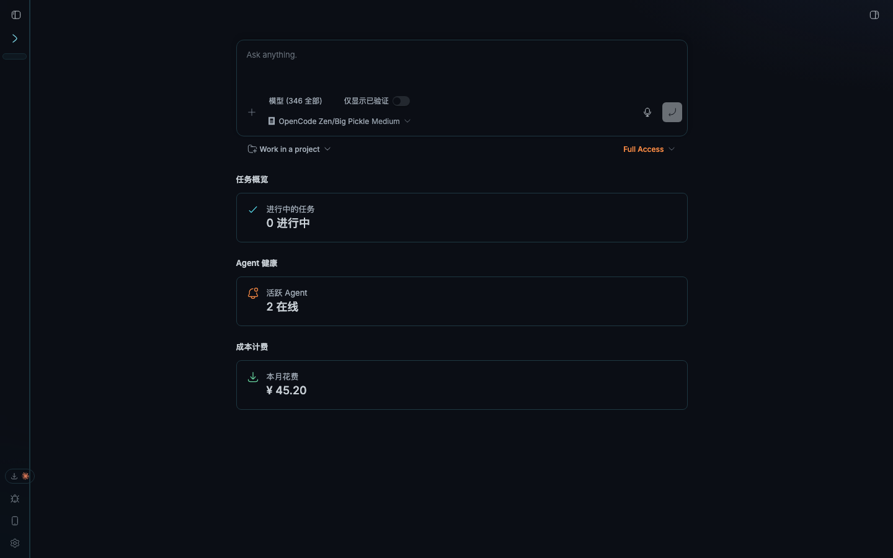
icon 抽屉 · 悬停浮出（hover-peek 临时展开）
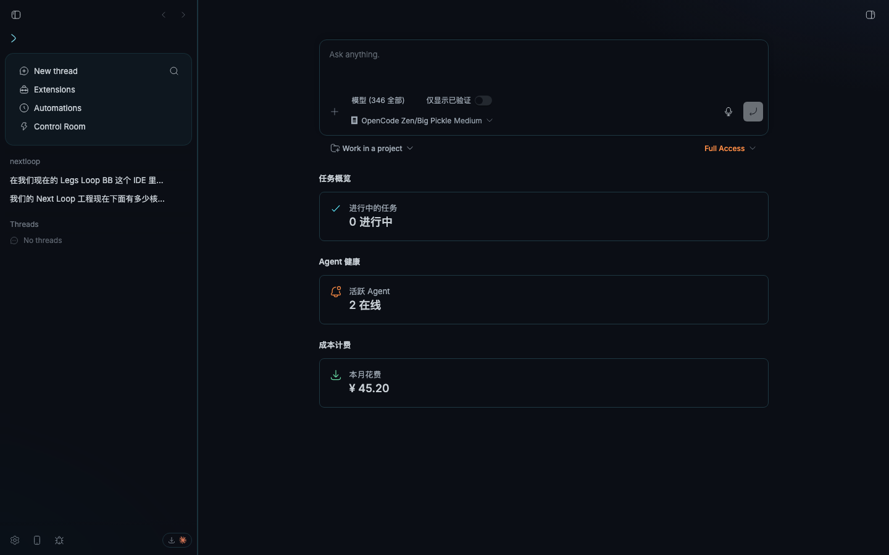
设置 · Appearance（DSH / NEXTLoop skin 开关 · ON，dark）
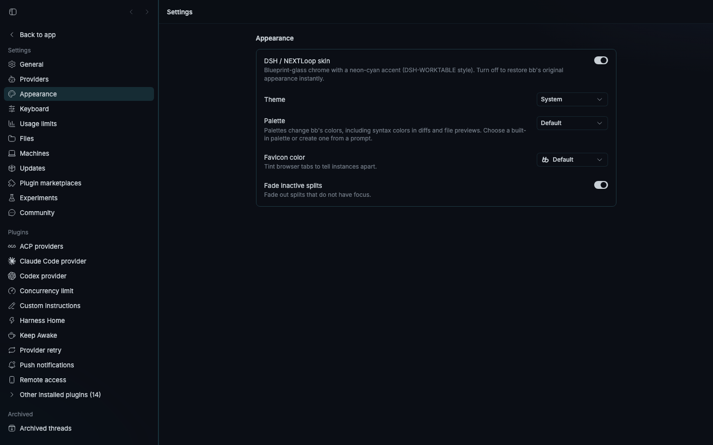
设置 · 一键关闭 → 即时恢复 bb 原版外观（OFF，dark）
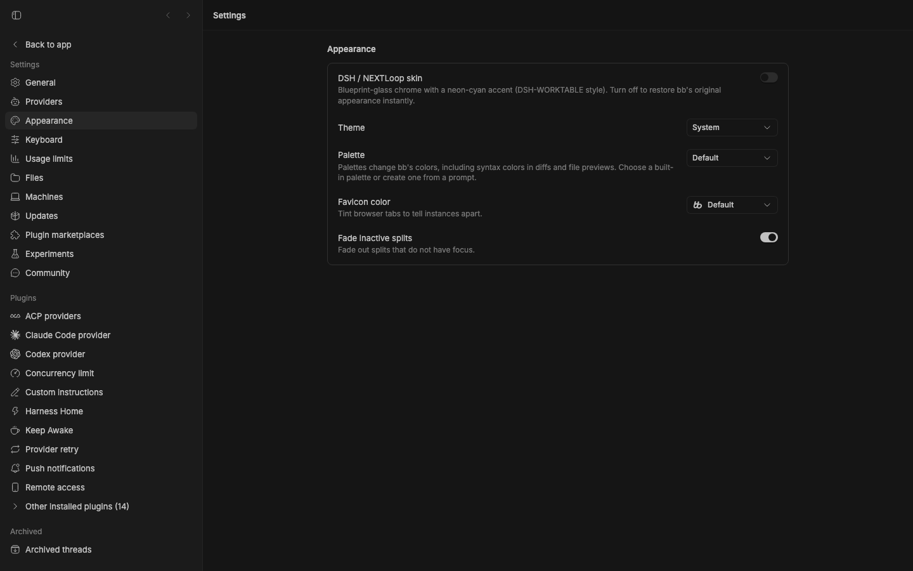
玻璃右侧面板 · 终端窗格（dark，chrome 72%/58% + blur 22px；xterm 画布不透明保可读性）
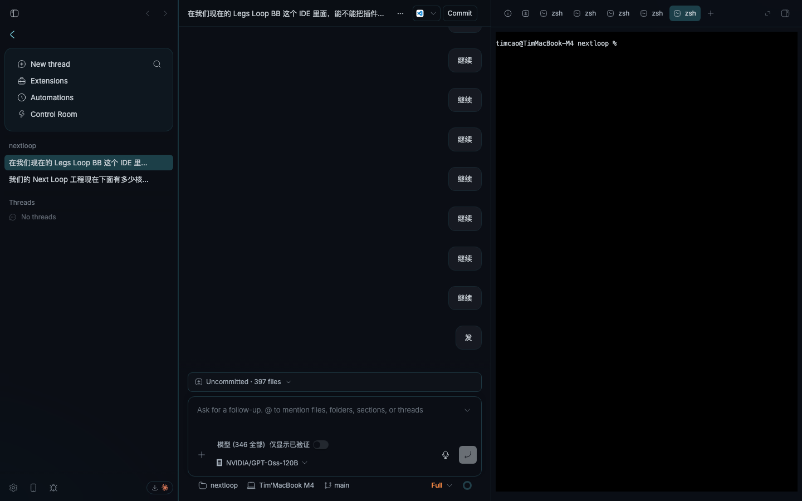
玻璃右侧面板 · 终端窗格（light）
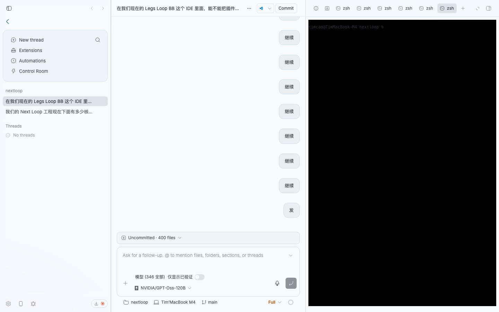
终端实时输入验证（echo glass-ok 已执行）
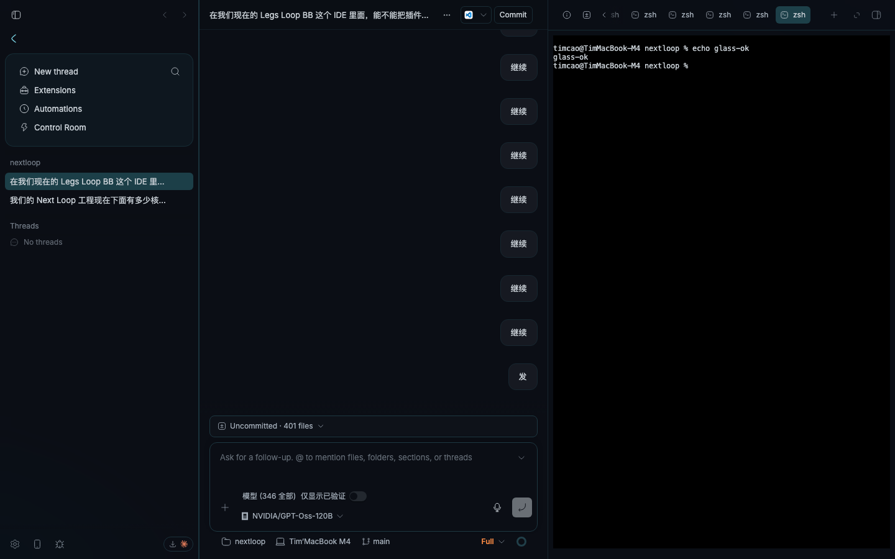
生成方式：headless Playwright（chromium）1440×900 viewport 连到本地 bb dev server
（http://127.0.0.1:18154），皮肤偏好默认开（localStorage bb.dshell.enabled）。
评审基线用途：前后对照该皮肤层的视觉回归；核心交互回归另有 41 例 vitest + typecheck 覆盖。